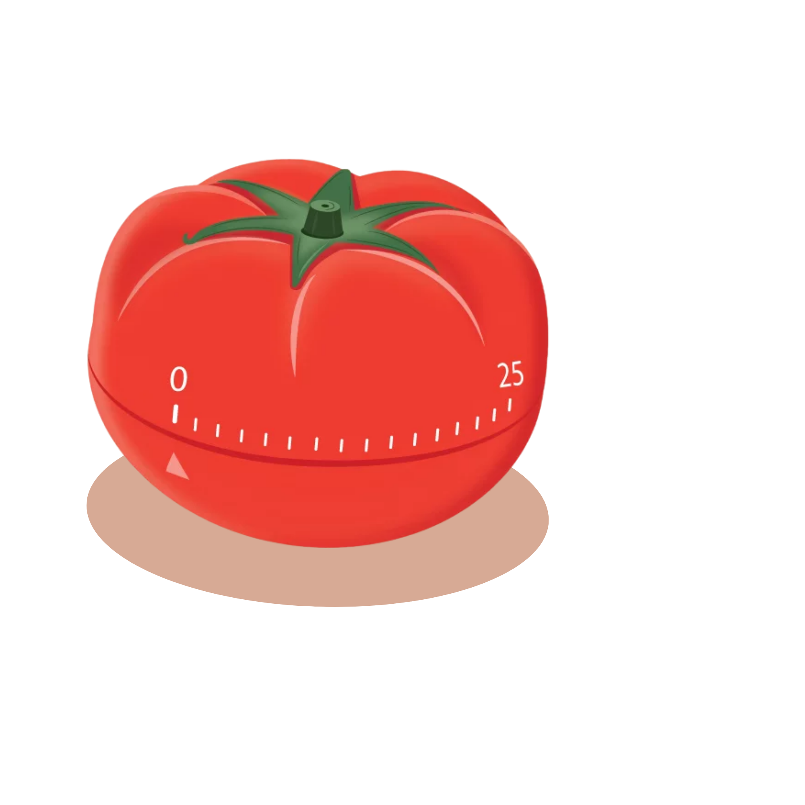

Loading your daily boost...
By breaking your work into manageable intervals, you can stay motivated and productive throughout your study sessions.
Try it out now below and see how much you can accomplish in just 25 minutes of focused work!

25:00
05:00
30:00
Days
Hours
Minutes
Seconds
© 2026 Cramly.space | All Rights Reserved